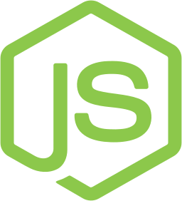
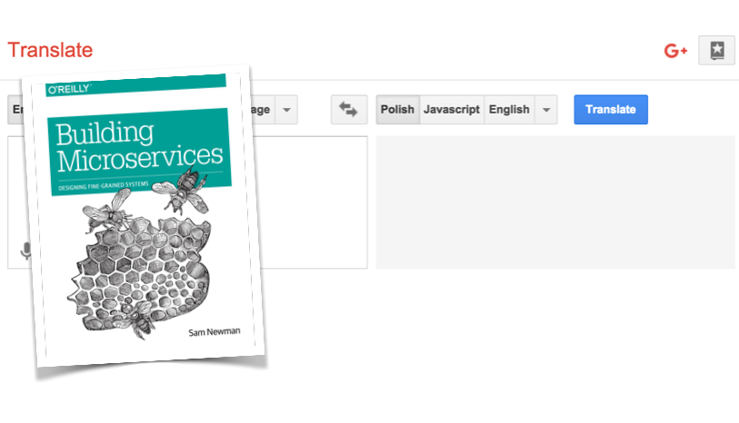

Szkolenie: Nowoczesna architektura aplikacji Web oparta o node.js
3 dni 80% warsztatów 20% wykładów
Mikrousługi, chmura, ciągłe wdrażanie oprogramowania na produkcję mocno wpłynęły na to jak współczesne zespoły
programistyczne budują systemy informatyczne. W tym nowym świecie jest coraz większe zapotrzebowanie na bardzo
szybkie i wydajne serwisy które w efektywny sposób wykorzystują zasoby serwera. To właśnie w tym kontekście
najlepiej sprawdza się node.js.
Podczas szkolenia zdobędziesz praktyczne doświadczenie jak budować mikrousługi z wykorzystaniem node.js.
Czego się nauczysz podczas szkolenia?
- Jak zrozumienie działania pętli zdarzeń wpływa na to jak myślimy o naszych programach
- Jak programowanie z this i bez this wpływa na czytelność Twojego kodu
- Jak tworzyć testowalne API i aplikacje webowe w express.js (routing, middleware, obsługa błędów, komunikacja
z bazą MongoDB)
- Jak testować i debugować aplikacje node.js (mocha, supertest, siege)
- Jak nadać strukturę nietrywialnym aplikacjom node.js z użyciem wzorca Dependency Injection (bez
frameworków)
- Jak refaktorować kod asynchroniczny z callbacków na promisy
- Jak budować aplikacje i zarządzać zależnościami w npm
- Jak budować potoki wdrożeń dla aplikacji node.js i wdrażać je na produkcję (na przykładzie Heroku)
- Jak tworzyć interfejs użytkownika dla mikrousług z użyciem wzorca Backend For Frontend (różne opcje
integracji serwisów: client side, edge side i server side include)
- Jak radzić sobie z problemami sieciowymi i pisać stabilne mikrousługi (timeout, retry, cachowanie, circuit
breaker, prawo Postela w praktyce)
- Jak zabezpieczyć kto korzysta z naszej mikrousługi w użyciem basic auth i JWT (JSON Web Token)
- Jak orkiestracja i choreografia wpływają na mikro i makro architekturę
- Jak odchudzić aplikacje node.js i przerzucić część odpowiedzialności na infrastrukturę (lekkie podejście do
logowania, metryk, cross-app tracing, rejestracji i odkrywania)
- Jak zastąpić w wielu przypadkach WebSockety przez dużo prostsze Server-Sent Events
- Jak przetłumaczyć koncepcje z książek o mikrousługach na świat JS 